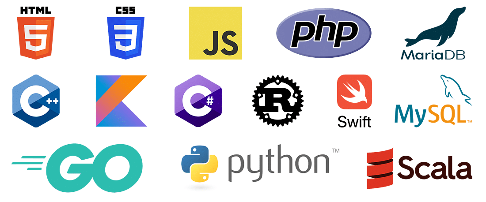

Mi nombre es Andres Arroyaves y soy estudiante de la Universidad Tecnologica de Panama. Tengo 19 años y actualmente estudio la carrera de Desarrollo y gestión de software
Mis intereses son:
Los mejores lenguajes de programación para aprender dependen de tus objetivos. Python es ideal para principiantes y ciencia de datos, ya que tiene una sintaxis clara. JavaScript es esencial para el desarrollo web, ya que se ejecuta en el navegador. Java y C# son mejores para entornos empresariales, enseñando buenas prácticas. C++ y C son recomendados para quienes buscan rendimiento, ya que enseñan sobre memoria y recursos del software. Para elegir, considera Python para resultados rápidos, JavaScript para aplicaciones web, y Java o C# para una carrera en el sector corporativo.

Aprender a programar requiere paciencia, constancia y un enfoque práctico por encima de la memorización.